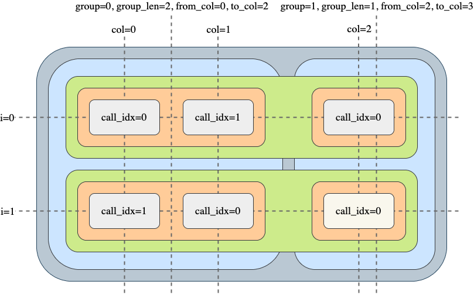

Vbt
Table of Contents
1. Useful Documentation
2. Unanswered Questions
Have several unanswered questions about this thing.
Focusing on from_order_func() as its the most robust backtest flow.
- Theres also a “flexible” version of
simulate_nb() flex_simulate_nb()allows multiple orders per symbol and bar- What is the final call sequence?
- What does each function in the call sequence do?
- What are “groups” and “segments”?
- Document each Context enum type
- What is
last_val_priceused for internally? - Examples online are modifiying internal state of passed contexts in the
_nb()callbacks- i.e. modifying
last_val_priceinpre_segment_func
- i.e. modifying
- What is
2.1. Strategy Implementation Questions
What are best practices for sharing memory in functional programming paradigm
- Passing around mutables appears to be necessary, and could get messy quick
- Mutable since we have path dependent calculations
- Best solution I can think of is using a structured data format (struct, namedtuple, etc) that stores mutables
- How can we retrieve this state after execution?
- Need a reference from outer scope?
- I feel like this is where Rust shines…
3. Core Concepts
3.1. Flexible Indexing
3.2. Broadcasting
As a rule of thumb:
- If any array is a Pandas object, always produces a Pandas object
- If any array is two-dimensional, always produces a two-dimensional array
- If all arrays are constants or one-dimensional, always produces a one-dimensional array
- If any array is a DataFrame and this array is a one-dimensional NumPy array, broadcasts along columns
- If this array is a Series, always broadcasts along rows
- Lists and other sequences are converted to NumPy arrays prior to broadcasting
3.3. Using Columns
Vectorbt is built around the idea that you can represent each asset, period, parameter combination, and a backtest in general, as a column in a two-dimensional array. Instead of computing everything in a loop we can change our code to accept parameters as arrays. A function that takes such array will automatically convert multiple parameters into multiple columns
3.4. Grouping
3.5. Call Hierarchy
Based on an imaginary 2D frame
- rows: time
- columns: assets/features
Each element of the frame represents a potential order (determined by order function)
NOTE: You can only safely access data points that are to the left of the current group and rows that are to the top of the current row.
3.5.1. Movement patterns
In both patterns, we move top-to-bottom (time) and left-to-right (assets/features) Differs in which axis moves faster
- Column-Major:
simulate_nb()- Process each column first
- For when columns are independent
- Row-Major:
simulate_row_wise_nb()- Process each row first
- For when rows are independent?
3.5.2. Blocks
Frame is divided into blocks:
- Columns: Assets/features
- Groups: Capital sharing?
- I.e. Groups of columns that may or may not share capital
- Rows: Time step
- Segments: Collections of groups within a group and time step
- Each segment defines a call sequence to execute order
- Elements
Each block has:
- Context: Its own context (passed to pre/post callbacks)
- pre-processing callback function:
- Called before entering the block
- Returns a tuple
- Tuple is unpacked and passed as arguments to next function in call hiearchy
- I.e. Prepare arrays or do custom calculations
- post-processing callback function:
- Called just before exiting block and moving to next function in call hiearchy
- I.e. Write user-defined arrays such as returns
4. Workflow Phases
4.1. Preparation
Occurs in a particular class method
- Receives a set of inputs, such as signal arrays and other parameters
- Resolves parameter defaults by searching for them in the global settings
- Brings input arrays to a single shape
- Does some basic validation of inputs and converts Pandas objects to NumPy arrays
- Passes everything to a Numba-compiled simulation function
4.2. Simulation
Occurs in numba simulation function
For each asset and timestamp (= element):
- Gets all available information related to this element and executes the logic
- Generates an order or skips the element altogether
- If an order has been issued, processes the order and fills/ignores/rejects it
- If the order has been filled, registers the result by appending it to the order records
- Updates the current state such as the cash and asset balances
4.3. Construction
Occurs in class method
- Receives the returned order records and initializes a new Portfolio object
4.4. Analysis
Occurs in Portfolio object
- Offers a broad range of risk & performance metrics based on order records
5. simulate_nb()
5.1. Call Sequence
pre_sim_func_nb(SimulationContext):Before Simulationpost_sim_func_nb(SimulationContext):After Simulationpre_group_func_nb(GroupContext):Before Grouppost_group_func_nb(GroupContext):After Grouppre_segment_func_nb(SegmentContext):Before Segmentpost_segment_func_nb(SegmentContext):After Segmentorder_func_nb(OrderContext):Orderpost_order_func_nb(PostOrderContext):After Order

Figure 1: simulate_nb call sequence

Figure 2: context information
5.1.1. Visualize Sequence
Note that this changes for row-wise variation Can be reordered to reflect the in-out sequence style
pre_sim_func_nb()pre_group_func_nb()pre_segment_func_nb()order_func_nb()post_order_func_nb()
post_segment_func_nb()
post_group_func_nb()
post_sim_func_nb()
- Sequence Order Example
Below example is taken from
simulate_nb()docsbefore simulation before group 0 before segment 0 creating order 0 at column 0 order status: 0 creating order 1 at column 1 order status: 0 creating order 2 at column 2 order status: 0 after segment 0 before segment 2 creating order 0 at column 1 order status: 0 creating order 1 at column 2 order status: 0 creating order 2 at column 0 order status: 0 after segment 2 before segment 4 creating order 0 at column 0 order status: 0 creating order 1 at column 2 order status: 0 creating order 2 at column 1 order status: 0 after segment 4 after group 0 after simulation
5.2. Signature
Scalars passed here are broadcast so that each row/group receives a copy.
- i.e. Fees, call-seq, size, etc. can be custom set per row, this is actually neat
simulate_nb(
target_shape,
group_lens,
init_cash,
cash_sharing,
call_seq,
segment_mask=array(True),
call_pre_segment=False,
call_post_segment=False,
pre_sim_func_nb=no_pre_func_nb,
pre_sim_args=(),
post_sim_func_nb=no_post_func_nb,
post_sim_args=(),
pre_group_func_nb=no_pre_func_nb,
pre_group_args=(),
post_group_func_nb=no_post_func_nb,
post_group_args=(),
pre_segment_func_nb=no_pre_func_nb,
pre_segment_args=(),
post_segment_func_nb=no_post_func_nb,
post_segment_args=(),
order_func_nb=no_order_func_nb,
order_args=(),
post_order_func_nb=no_post_func_nb,
post_order_args=(),
close=array(nan),
ffill_val_price=True,
update_value=False,
fill_pos_record=True,
max_orders=None,
max_logs=0,
flex_2d=True
)
5.3. Callbacks
5.3.1. pre_sim_func_nb()
Use this to create temporary state arrays to get passed down the call stack
5.3.2. post_sim_func_nb()
5.3.3. pre_group_func_nb()
Same purpose as pre_sim_func_nb() but called at different time
5.3.4. post_group_func_nb()
5.3.5. pre_segment_func_nb()
Use to set order prices and alter internal state (i.e. valuation price) Also set call_seq order (i.e. have sells execute first)
5.3.6. post_segment_func_nb()
5.3.7. order_func_nb()
5.3.8. post_order_func_nb()
6. simulate_row_wise_nb()
- pre_row_func_nb: only called if there is at least on active segment in the row.
- pre_segment_func_nb/order_func_nb: only called if their segment is active.
- If the main task of pre_row_func_nb is to activate/deactivate segments, all segments should be activated by default to allow pre_row_func_nb to be called.